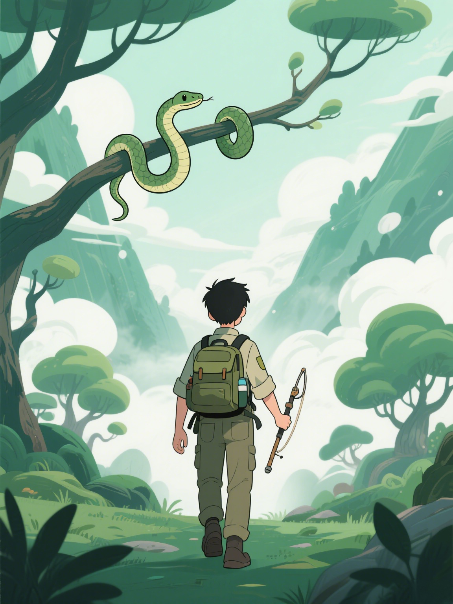

专业蛇类识别系统
上传蛇的图片，立即获取种类信息和安全提示
{{ nclass }}+
蛇类物种
99%
识别准确率
24h
随时可用

上传蛇类图片
支持JPG、PNG格式，最大5MB
识别结果
上传的图片
主要结果
物种名称
{{ primary_result.species }}
类别ID
{{ primary_result.class_id }}
识别置信度
{{ primary_result.confidence }}
详细信息
{{ primary_result.snake_info_html|safe }}
备选结果
主要结果置信度低于90%，提供备选识别结果
备选物种
物种名称
{{ secondary_result.species }}
类别ID
{{ secondary_result.class_id }}
识别置信度
{{ secondary_result.confidence }}
详细信息
{{ secondary_result.snake_info_html|safe }}
蛇类百科
滑动浏览更多蛇类信息